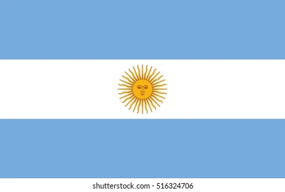

ARGENTINA WORLD CUP 2022

Lionel Messi and friends are into the quarter-finals, with another performance that totally failed to answer any of the questions about Argentina's chances.
It was a lot of fun though. Earlier in the day, the Netherlands saw off the USA with a precise performance that looked,
we reckon, exactly how Louis van Gaal wanted it to look. It's all going to plan
They are, we can probably say, good enough. World Cups have been won by teams with one genius and ten players to carry that genius.
World Cups have been won by Argentina with just that particular plan, and we mean that as no insult to everybody else that got a winners' medal in 1986.
When you've got a Maradona you give it to Maradona. And when you've got a Messi, then even the pluckiest of opposition stand to get their hearts broken.
By our reckoning, the opening goal against Australia was the first time all evening Messi had taken the ball into the opposition box. He doesn't need much. Half a sniff, if that.
And yet. Argentina's first came thanks to their resident genius, and their second from an Australian brainfade of calamitous proportions. That should have been that.
At two goals up against a willing but limited opposition, the big team playbook reads: keep the ball and kill the game. Argentina proved totally unable to do the former, which meant the game remained stubbornly alive. Then came a big deflection to slash the lead. And then came missed chances at both ends. Aziz Behich nearly scored the greatest, funniest goal in World Cup history, a delirious rip-off of Maradona's second against England, agonisingly blocked at the last. Emi Martínez made a magnificent save in the last minutes of injury time. None of this should have been happening.
Goalkeepers: Emiliano Martinez (Aston Villa), Franco Armani (River Plate) and Geronimo Rulli (Villarreal)
Defenders: Gonzalo Montiel (Sevilla), Nahuel Molina (Atletico Madrid), German Pezzella (Real Betis), Cristian Romero (Tottenham Hotspur), Nicolas Otamendi (Benfica), Lisandro Martinez (Manchester United), Juan Foyth (Villarreal), Nicolas Tagliafico (Olympique Lyonnais), Marcos Acuna (Sevilla)
Midfielders: Leandro Paredes (Juventus), Guido Rodriguez (Real Betis), Enzo Fernandez (Benfica), Rodrigo De Paul (Atletico Madrid), Exequiel Palacios (Bayer Leverkusen), Alejandro Gomez (Sevilla), Alexis Mac Allister (Brighton & Hove Albion)
Forwards: Paulo Dybala (AS Roma),Lionel Messi (Paris Saint-Germain), Angel Di Maria (Juventus), Nicolas Gonzalez (Fiorentina), Joaquin Correa (Inter Milan), Lautaro Martinez (Inter Milan), Julian Alvarez (Manchester City).